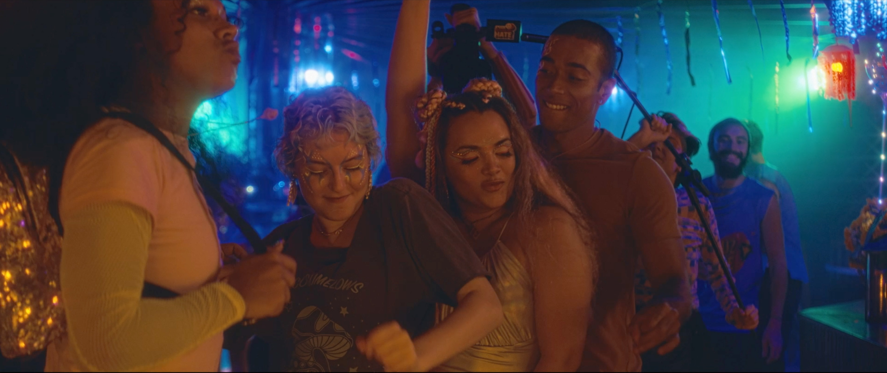
Synopsis
In the movie Alice Junior - Summer Break, the girl has grown up and become a young adult. After living so many adventures on her journey to finally get her first kiss in the first film, now she will have to face a series of new trials to finally enjoy her summer break.
Credits
Cast: Anne Celestino, Lucca Picon, Divina Valéria
Director: Gil Baroni
Executive Producer: Andréa Tomeleri
Screenplay: Luiz Bertazzo, Adriel Nizer, Galba Gogóia and Gil Baroni
Editing: Pedro Giongo
Assistant Editor: Raíssa Castor
* In final stage of post-production.
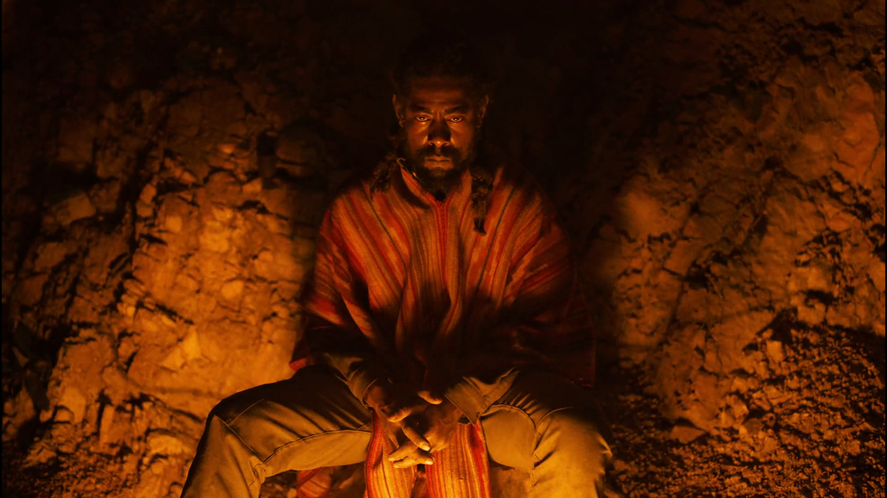
Synopsis
Curva de Vento, a carpenter, firefighter, and Rastafarian, leads this journey between destruction and rebirth. In addition to fighting arson in forest areas, he faces the encroachment of a luxury condominium that threatens to evict residents, extinguish an endemic bee species, and compromise the stone and crystal house that Curva is building with his own hands.
Credits
Cast: Vinícius Curva
Director: Daniel Calil and Renato Ogata
Executive Producer: Ludmila Rodrigues
Screenplay: Daniel Calil and Renato Ogata
Editing: Pedro Giongo
Assistant Editor: Alice Kupac
* In post-production stage.
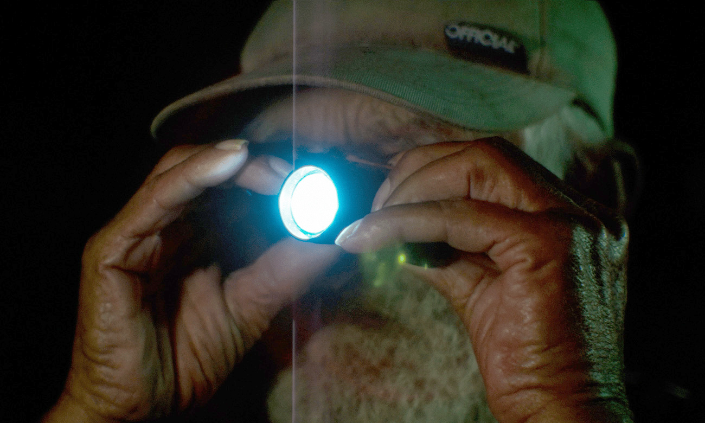
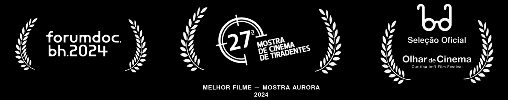
Synopsis
Martelo is a 70-year-old fisherman who has not yet managed to retire. He is the lighthouse man, pointing his light towards the island of Superagüi and only illuminating earthly desires that speak volumes about the present moment: better working conditions, retiring with dignity, and returning to the way things were in the past.
Credits & Awards
Cast: Olivares Gomes, Valdemir Matias Gomes, Marcell Squenine
Direction and Production: Pedro Giongo
Editing: Pedro Giongo, Bruno Carboni
Links: IMDb
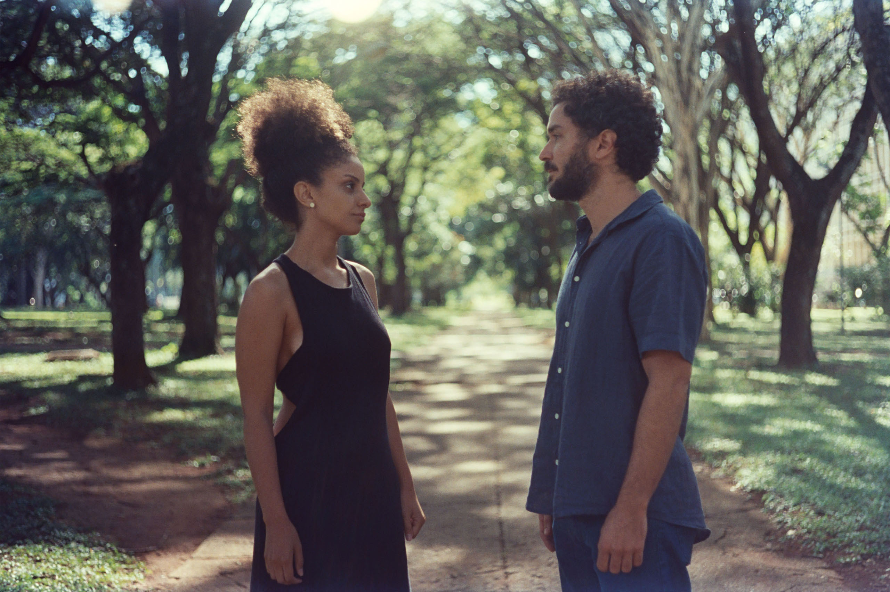
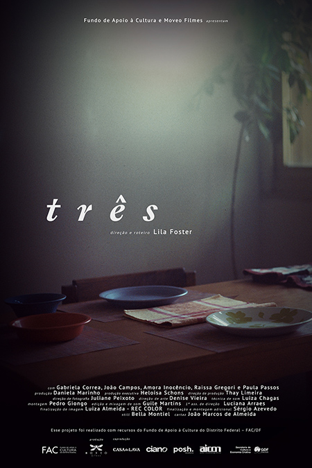
Synopsis
"Três" is the story of a family. A woman, Luisa, a man, João, a daughter, Vera. Even though the film is anchored in this triangulation, it is the female character's perspective, her way of perceiving her surroundings and the dilemmas of a life of three, that lies at the heart of the film's dramatic construction. How, then, to construct such a gaze? How to give shape to Luisa's feelings?
Credits & Awards
Cast: João Campos, Gabriela Correa, Raissa Gregori
Director: Lila Foster
Executive Producer: Daniela Marinho
Editing: Pedro Giongo
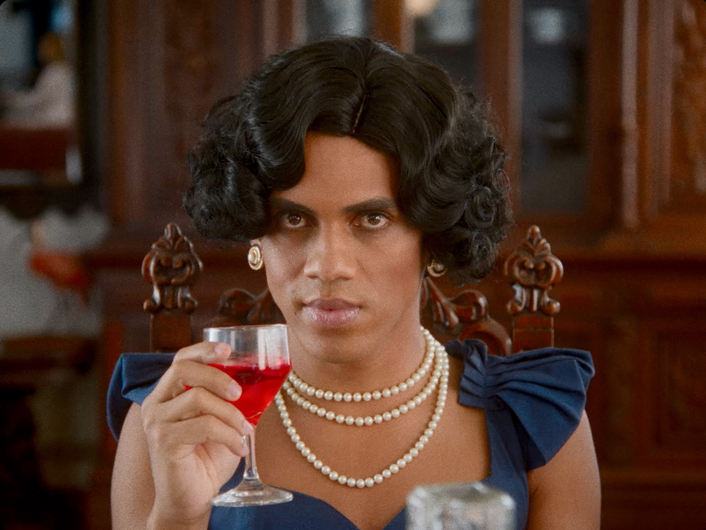
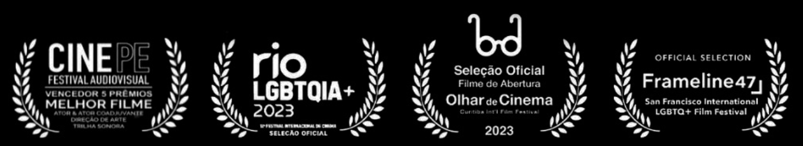
Synopsis
In an isolated mansion founded by a slave-owning elite, a crossdressers' retreat is established. In it, men dress up in a glamorous and delusional reality, far from the dark years of the military dictatorship in 1970s Brazil.
Credits & Awards
Cast: Jorge Neto, Luís Melo, Andrei Moscheto, Laura Haddad
Director: Gil Baroni
Screenplay: Luiz Bertazzo
Editing: Pedro Giongo
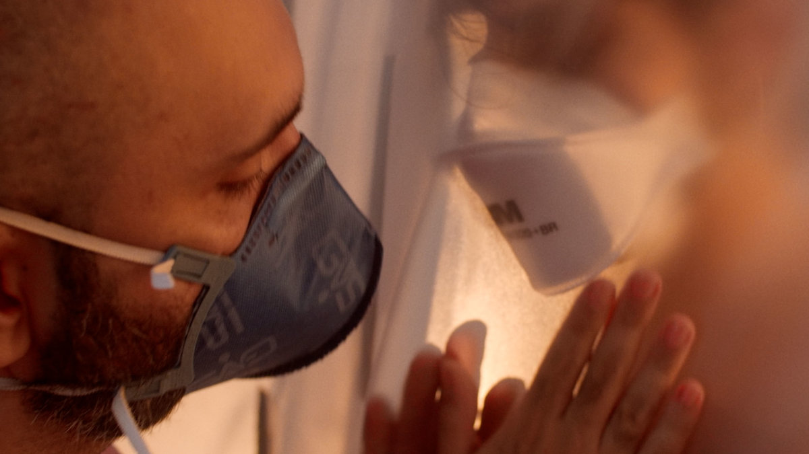
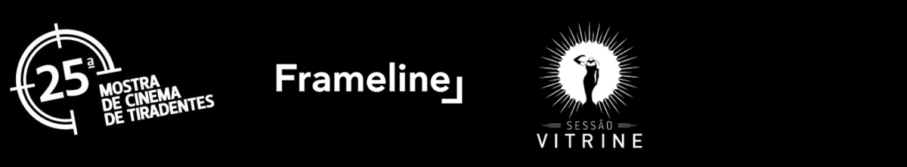
Synopsis
After 10 months of self-imposed lockdown, Francisco wants to have sex.
Credits & Awards
Cast: Fábio Leal, Paulo César Freire, Lucas Drummond
Director: Fábio Leal
Editing: Matheus Farias and Pedro Giongo
Review: Folha de São Paulo
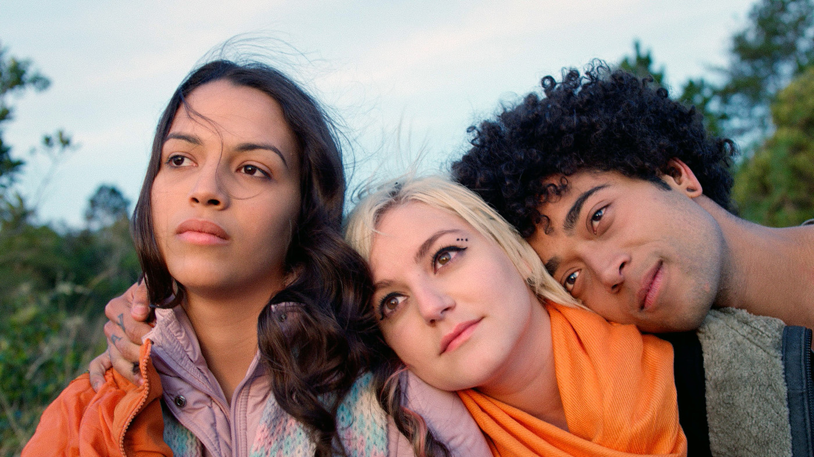
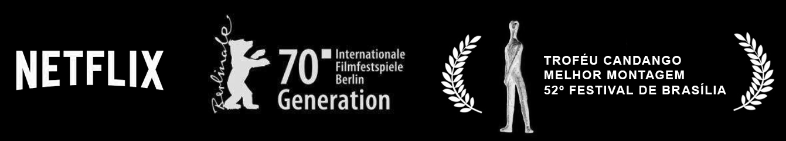
Synopsis
Alice Junior is a trans YouTuber surrounded by freedom and pampering. After moving with her father to a small town where the school seems frozen in time, the young woman must survive high school and prejudice to achieve her greatest desire: to get her first kiss.
Credits & Awards
Cast: Anne Celestino, Emmanuel Rosset, Surya Amitrano
Director: Gil Baroni
Screenplay: Luiz Bertazzo, Adriel Nizer
Editing: Pedro Giongo
Review: IndieWire
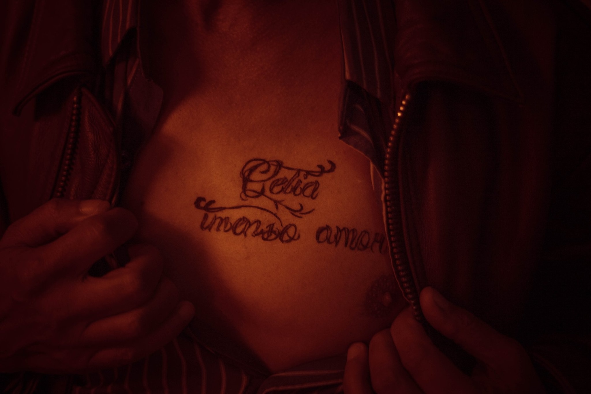
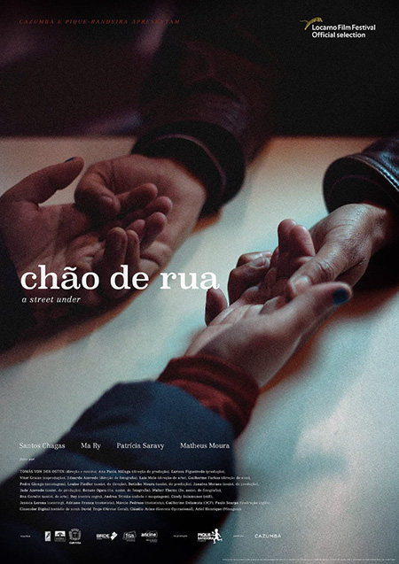
Synopsis
After an exhausting day at work, Alberto wants to return home and show his partner the newly tattooed words on his chest: “Célia imenso amor” (Celia immense love), but his sister arrives in town and needs a place to stay.
Credits & Festivals
Director: Tomás von der Osten
Production: Cazumbá Filmes and Pique Bandeira Filmes
Editing: Pedro Giongo
World premiere at the 72nd Locarno Film Festival (Switzerland). Nominated for the Grand Prize of Brazilian Cinema.
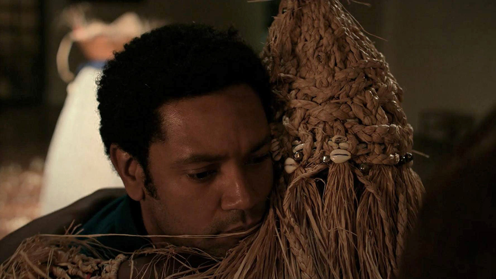
Synopsis
Cristian abandoned his family to climb Mount Everest and now returns home with terminal cancer. Cristian's return brings to light his troubled family relationships and the social context of Brazil: he is the fourteenth Brazilian to have climbed Mount Everest, but the first black man among them.
Credits
Director: Marçal do Carmo and Fernando Sturmer
Production: Diadorim Filmes and Beija-flor Filmes
Editing: Pedro Giongo
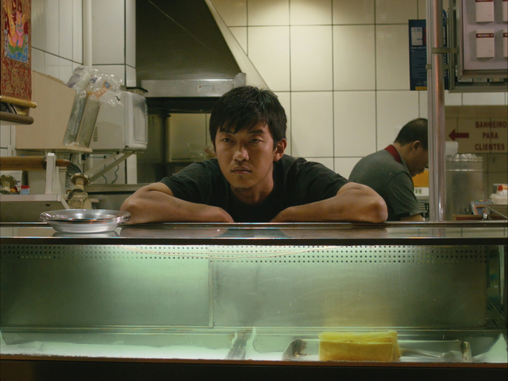
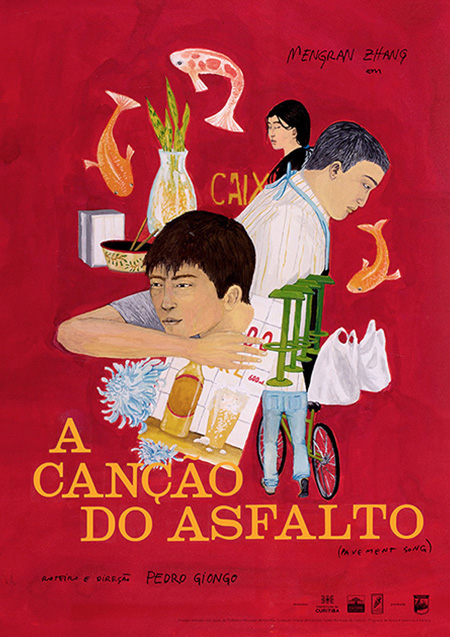
Synopsis
At night, when the streets are empty, the asphalt echoes the music of silence.
Credits
Director, Screenplay & Production: Pedro Giongo
Editing: Pedro Giongo and Nathália Tereza
Premiere at the 20th Tiradentes Film Festival (2017). Screened at the Cinémathèque Française (Paris).
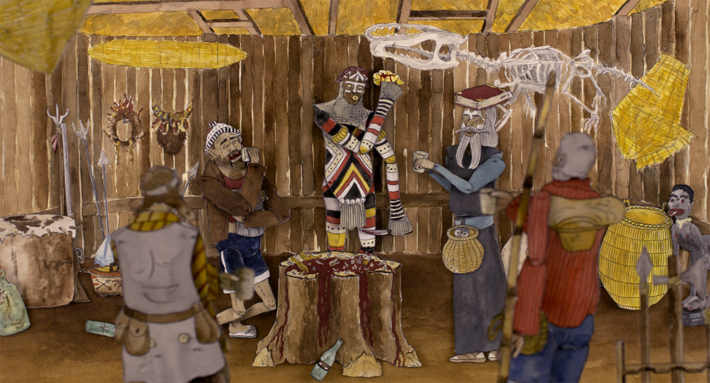
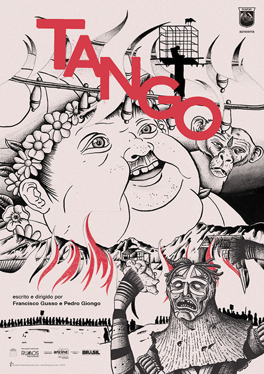
Synopsis
After years of drought, a mystical potato sprouts in the distant headwaters of the Aiatak River. Soon, everything will be ready for the great ritual of Tango. For the people, this is the beginning of a new era. Inspired by Franz Kafka's short story 'A Hunger Artist', 'Tango' is a dive into human nature and its contradictions.
Credits & Awards
Director: Francisco Gusso and Pedro Giongo
Production & Distribution: Estudio Tijucas
Editing: Pedro Giongo
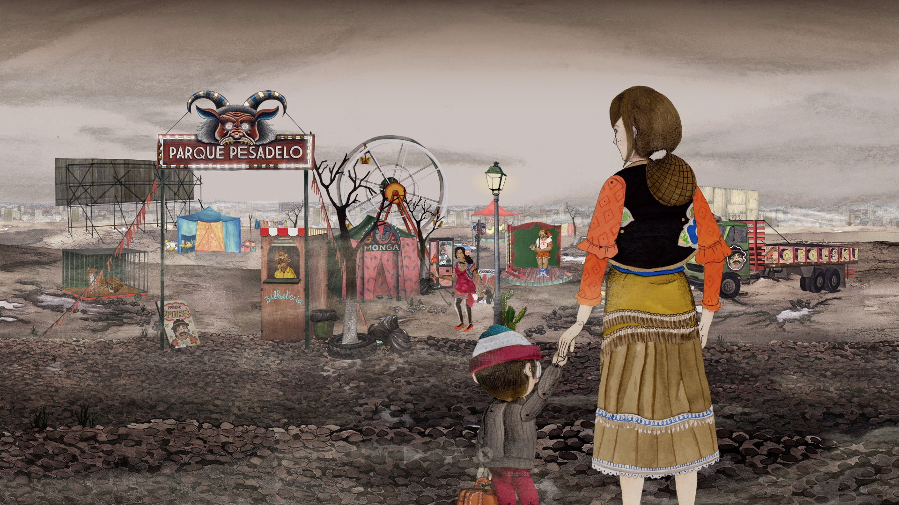
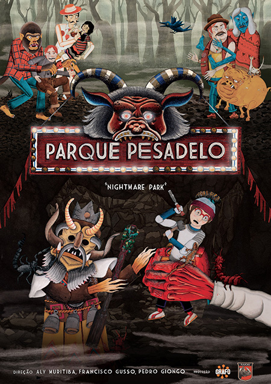
Synopsis
The white flowers on the boy's back began to darken. In the war to save the legends, Jurupari is about to disappear.
Credits & Awards
Director: Aly Muritiba, Francisco Gusso and Pedro Giongo
Production: Grafo Audiovisual and Estudio Tijucas
Editing: Pedro Giongo